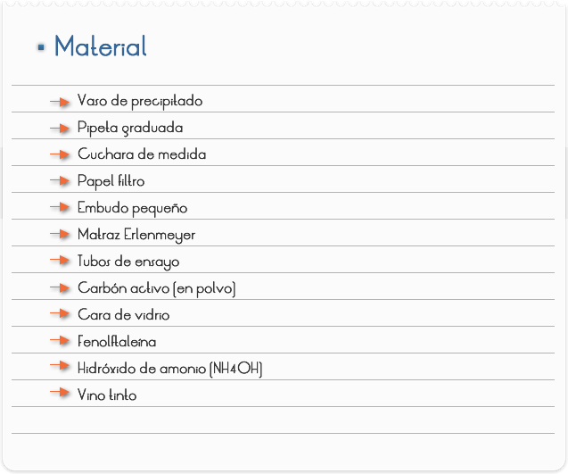
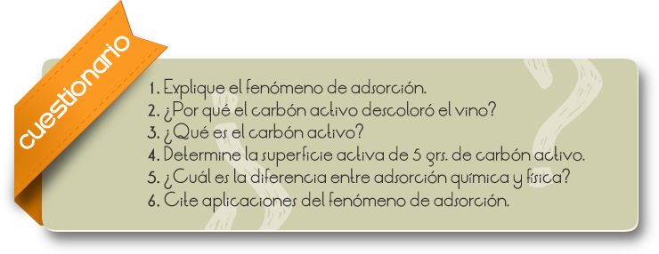
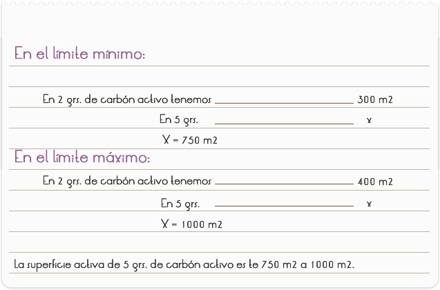

Introducción
Las mezclas ocurren de forma espontánea, la separación requiere de una energía mínima para que se lleve a cabo.
Clasificación de los procesos de separación:
1. Difusionales. Cuando la mezcla es homogénea: los elementos de la mezcla se encuentran en la misma fase. Slurries, emulsiones, gases o vapores con sólidos o líquidos.
2. Procesos de equilibrio dependientes de energía: destilación, cristalización, evaporación.
3. Procesos de equilibrio dependientes de masa: adsorción, intercambio iónico, extracción.
Procesos controlados por un gradiente o tasa de reacción/transferencia: membranas, precipitación química procesos electroquímicos, etc.
4. Mecánicos. Cuando la mezcla es heterogénea: los elementos de la mezcla se encuentran en más de una fase (sólido en líquido o gas, líquido en gas, etc.)
5. Sedimentación, flotación, filtración, separación magnética, centrifugación, precipitación electrostática.
Objetivo
Preparar una solución colorida y, con ayuda de una porción de carbón activo, separar sus componentes.

PARTE I: SEPARACIÓN DE UNA MEZCLA DE HIDRÓXIDO DE AMONIO Y FENOLFTALEÍNA
1. Numerar cuatro tubos de ensayo.
2. Colocar en los dos primeros tubos, 1 gota de hidróxido de amonio, 2 gotas de fenolftaleína y 4 ml. de agua.
3. Doblar el papel filtro y hacer una filtración simple de la solución contenida en el tubo 1, recogiendo lo filtrado en el tercer tubo que debe estar seco.
4. Observar si hubo cambio en la coloración.
5. Colocar una cuchara pequeña de carbón activo en el tubo 2 y sacudir el sistema.
6. Filtrar el contenido del tubo 2 y recoger lo filtrado en el cuarto tubo, que debe estar seco.
7. Observar la coloración y comparar con la obtenida después de la filtración simple.
PARTE II: DESCOLORAMIENTO DEL VINO
1. Colocar en un vaso de precipitado, 10 ml. de vino tinto y agregar 2 cucharas de medida de carbón activo.
2. Agitar la mezcla y dejar en reposo por 30 minutos.
3. Filtrar el sistema en la boca de un matraz Erlenmeyer, observar y anotar.
NOTA:
- Si el carbón estuviere granulado utilizar el mortero y triturar.
- 2 grs de carbón activo equivalen a 300 o 400 m2 de superficie activa.

RESULTADOS Y CONCLUSIONES
PARTE I
Se observa que en el tubo 3 (filtración simple) no hay separación de la mezcla de hidróxido de amonio (NH4OH) y fenolftaleína, pues el color del filtrado permanece igual a la de la solución inicial (rojo-rosáceo).
En el tubo 4 (que contiene lo filtrado de la solución que pasó por el carbón activo) hubo decoloración – lo filtrado queda incoloro. Esto ocurre porque la fenolftaleína, sustancia responsable por la coloración de la solución, quedó retenida en el carbón activo. El carbón activo (animal o vegetal) presenta una larga estructura porosa de átomos de carbono.
Esta estructura, forma una superficie capaz de atraer y retener las moléculas o iones de las sustancias que, como la fenolftaleína, son responsables por la coloración de la solución.
PARTE II
Se observa en el matraz Erlenmeyer que hubo la decoloración del vino, pues las sustancias responsables de la coloración quedarán retenidas en el carbón activo. Se sabe que 2 grs. de carbón activo equivalen a 300 o 400 m2 de superficie activa. Para determinar la superficie activa aproximada, de cualquier cantidad de carbón activo, basta efectuar una simple regla de tres. Por ejemplo, determinar la superficie activa de 5 grs. de carbón activo
